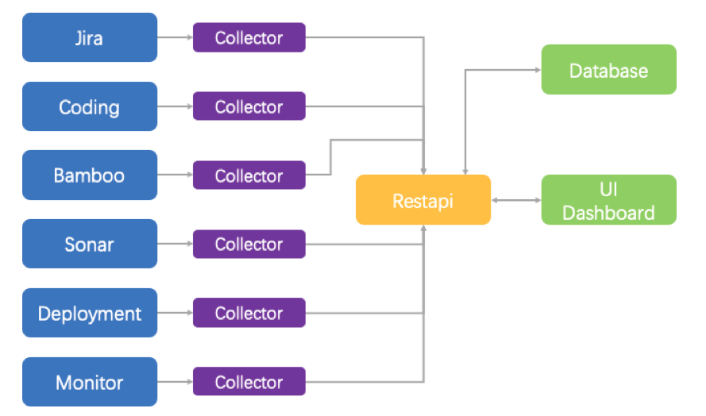
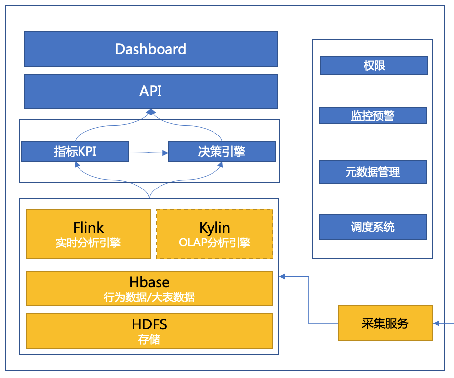

- 00 开篇词 从默默无闻到风靡全球，DevOps究竟有什么魔力？.md.html
- 01 DevOps的“定义”：DevOps究竟要解决什么问题？.md.html
- 02 DevOps的价值：数字化转型时代，DevOps是必选项？.md.html
- 03 DevOps的实施：到底是工具先行还是文化先行？.md.html
- 04 DevOps的衡量：你是否找到了DevOps的实施路线图？.md.html
- 05 价值流分析：关于DevOps转型，我们应该从何处入手？.md.html
- 06 转型之路：企业实施DevOps的常见路径和问题.md.html
- 07 业务敏捷：帮助DevOps快速落地的源动力.md.html
- 08 精益看板（上）：精益驱动的敏捷开发方法.md.html
- 09 精益看板（下）：精益驱动的敏捷开发方法.md.html
- 10 配置管理：最容易被忽视的DevOps工程实践基础.md.html
- 11 分支策略：让研发高效协作的关键要素.md.html
- 12 持续集成：你说的CI和我说的CI是一回事吗？.md.html
- 13 自动化测试：DevOps的阿克琉斯之踵.md.html
- 14 内建质量：丰田和亚马逊给我们的启示.md.html
- 15 技术债务：那些不可忽视的潜在问题.md.html
- 16 环境管理：一切皆代码是一种什么样的体验？.md.html
- 17 部署管理：低风险的部署发布策略.md.html
- 18 混沌工程：软件领域的反脆弱.md.html
- 19 正向度量：如何建立完整的DevOps度量体系？.md.html
- 20 持续改进：PDCA体系和持续改进的意义.md.html
- 21 开源还是自研：企业DevOps平台建设的三个阶段.md.html
- 22 产品设计之道：DevOps产品设计的五个层次.md.html
- 23 持续交付平台：现代流水线必备的十大特征（上）.md.html
- 24 持续交付平台：现代流水线必备的十大特征（下）.md.html
- 25 让数据说话：如何建设企业级数据度量平台？.md.html
- 26 平台产品研发：三个月完成千人规模的产品要怎么做？.md.html
- 27 巨人的肩膀：那些你不能忽视的开源工具.md.html
- 28 迈向云端：云原生应用时代的平台思考.md.html
- 29 向前一步：万人规模企业的DevOps实战转型案例（上）.md.html
- 30 向前一步：万人规模企业的DevOps实战转型案例（下）.md.html
- 期中总结 3个典型问题答疑及如何高效学习 (1).md.html
- 期中总结 3个典型问题答疑及如何高效学习.md.html
- 期末总结 在云时代，如何选择一款合适的流水线工具？.md.html
- 特别放送（一）成为DevOps工程师的必备技能（上）.md.html
- 特别放送（三）学习DevOps不得不了解的经典资料.md.html
- 特别放送（二）成为DevOps工程师的必备技能（下）.md.html
- 特别放送（五）关于DevOps组织和文化的那些趣事儿.md.html
- 特别放送（四）Jenkins产品经理是如何设计产品的？.md.html
- 结束语 持续改进，成就非凡！.md.html
- 捐赠
25 让数据说话：如何建设企业级数据度量平台？
你好，我是石雪峰。今天我来跟你聊聊数据度量平台。
先说个题外话。在2019年的DevOps World | Jenkins World大会上，CloudBees公司重磅发布了他们的全新产品：SDM - Software Delivery Management 。在我看来，这注定是一个跨时代的产品。
简单来说，SDM想要解决的问题就是，将割裂的软件开发流程收敛到一个平台上，通过收集软件开发全流程的数据，并进行智能分析，从而让整个软件交付过程的方方面面对所有人都可视化。
无论这个产品最终是否能够获得成功，它背后的设计理念绝对是非常超前的，因为这是第一次有一个解决方案把业务视角和开发视角连接了起来。
对业务人员来说，他们能够实时看到特性的交付进度；对开发人员来说，他们也能实时看到交付特性的业务指标和用户反馈；对管理人员来说，他们可以纵观整个流程，发现交付过程中的阻塞和效率瓶颈。
这听起来是不是很神奇呢？别急，关于这个产品的更多特性，我会在后续的特别放送中给你带来更多的介绍，敬请期待。
言归正传，我走访过的公司无一例外地都在花大力气建设数据度量平台。这些度量平台虽然看起来长得都不一样，但是他们想要解决的核心问题都是一致的，那就是软件研发过程可视化。
为什么可视化对于软件研发来说这么重要呢？这是因为，可视化可以大幅降低软件开发的协作成本，增加研发过程的透明度，从而大大减少研发过程中的浪费和返工。
举个最简单的例子，每周开会的时间成本一般都比较高，但如果老板能对项目的状态有清晰的了解，何必还要费这么大力气汇报工作呢？
在专栏的第19讲中，我给你介绍了DevOps度量体系的相关内容。你还记得好的度量指标一般都具有的典型特征吗？这些特征就是明确受众、直指问题、量化趋势、充满张力。
其实，在评价一个度量平台的时候，这些特征同样适用。因为，在数据度量平台上呈现的内容，正是度量指标。这也就是说，将度量指标的数据和详情汇总起来，再根据度量指标的维度，展现出各式各样的视图，从而满足不同用户的需求。
这样一来，整个团队的交付情况，包括交付效率和质量，就可以通过客观数据展示出来，而不再依赖于个人的主观臆测。有了客观的数据做尺子，团队的改进空间也就一目了然了。
听起来是不是特别美好？但实际上，度量平台要想满足这种预期，可不是一件简单的事情。
我认为，在数据度量平台的建设和落地过程中，事前、事中和事后这三个阶段都存在着大量的挑战。接下来，我就从这三个阶段入手，给你聊聊度量平台建设的一些思路。
事前：指标共识
毫无疑问，度量指标是数据度量平台的基础。在建设平台之前，如果指标本身的定义、数据来源、计算方法、统计口径等没有在团队内部达成共识的话，那么，数据度量平台呈现出来的数据也同样是有问题的。
我给你举个例子。需求流转周期这个指标，一般是计算需求卡片在需求的各个状态的停留时长的总和，包括分析、设计、开发、测试、发布等。
其中的测试流转周期计算的是，从需求卡片进入待测试状态到测试完成进入待发布状态的时长，例如5天。但是，在真正支持测试任务的系统中，也有一个测试流转周期。这个流转周期计算的是每个测试任务的平均执行时间，这样算出来的测试周期可能只有1天。
先不说这两种计算方式谁对谁错，我想表达的是，即便是针对同一个指标，在不同平台、根据不同计算方法得到的结果也大不相同。
如果不能把指标的定义对齐，那么在实施度量的过程中，大家就会不清楚到底哪个数据是正确的，这显然不利于度量工作的推进。
另外，在定义度量指标的时候，一般都会召开指标评审会议。但这个时候，因为拿不出具体的数据，大家光盯着指标定义看，往往也看不出什么问题。等到平台上的数据出来了，才发现有些数据好像不太对。于是，要再针对指标重新梳理定义，而这往往就意味着平台开发的返工和数据重新计算。在平台建设的过程中，数据校准和指标对齐工作花费的时间很有可能比开发平台本身的时间都要多。
“数据本身不会说话，是人们赋予了数据意义”，而“这个意义“就是度量指标。
在定义指标的时候，大家都愿意选择对自己有利的解释，这就导致大家看待数据的视角无法对齐。
所以，在实施度量平台建设之前，最重要的就是细化度量指标的数据源和计算方法，而且一定要细化到可以落地并拿出数据结果的程度。
比如，开发交付周期这个指标一般是指从研发真正动工的时间点开始，一直到最终上线发布为止的时长。但是这个描述还是不够细化，所以，我们团队对这个指标的描述是：从研发在需求管理平台上将一个任务拖拽到开始的开发阶段起，一直到这个任务变成已发布状态为止的时间周期。
这里的任务类型包括特性、缺陷和改进任务三种，不包含史诗任务和技术预研任务类型。我们会对已达到交付状态的任务进行统计，未完成的不在统计范围中。你看，只有描述到这种颗粒度，研发才知道应该如何操作，数据统计才知道要如何获取有效的数据范围。
我建议你在着手启动数据度量平台建设之前，至少要保证这些指标数据可以通过线下、甚至是手工的方式统计出来，并在内部达成共识。
切忌一上来就开始盲目建设！很多时候，我们虽然花了大力气建设平台，最终也建设出来了，但结果却没人关注，核心问题还是出在了指标上。
数据平台作为企业内部的公信平台，数据的准确性至关重要。如果数据出现了偏差，不仅会导致错误的判断，带来错误的结果，还会对平台自身的运营推广造成很大的伤害。
事中：平台建设
随着软件交付活动复杂性的上升，在整个交付过程中用到的工具平台也越来越多。虽然通过持续交付流水线平台实现了交付链路的打通，通过交付流水线来驱动各个环节的工具平台来完成工作，但是，客观来说，企业内部的工具平台依然是割裂的状态，而非完整的一体化平台。
这就带来一个问题：每个平台或多或少都有自己的数据度量能力，甚至也有精细化维度的数据展示，但是这些数据都是存储在各个工具平台自身的数据库中的。
我给你举个例子。Jira是一个业界使用比较普遍的需求管理平台，也是一个成熟的商业工具，所以，对于这类商业化系统都提供了比较完善的API。再加上Jira自带的JQL查询语言，可以相对比较简单地查询并获取元数据信息。但是，对于一个自研平台来说，对外开发的API可能相对简单，甚至有的系统都没有对外暴露API。在这种情况下，如果想要获取平台数据，要么依赖于开发新的API，要么就只能通过JDBC直接访问后台数据库的形式来提取数据。
不仅如此，还有些平台的数据是通过消息推送的方式来获取的，无法主动地获取数据，只能通过订阅消息队列广播的方式来获取。
所以，你看，对于不同的元数据平台，数据获取的方式也是千差万别的。
挑战一：大量数据源平台对接
那么，作为一个统一的数据度量平台，面对的第一个挑战就是，如何从这些种类繁多的平台中提取有用的数据，并且保证数据源接入的隔离性，做到灵活接入呢？
我给你的建议还是采用流水线设计的思路，那就是插件化，只不过，这次要实现的插件是数据采集器。你可以看一下这张简单的架构示意图：

采集器是针对每一个对接的数据源平台实现的，它的作用就是对每个数据源进行数据建模，从而对平台屏蔽各种数据获取方式，将采集到的数据进行统一格式化上报和存储。在采集器上面可以设计一个Operation层，用来调整采集器的执行频率，控制采集数据的范围。
如果数据量比较大，你也可以让采集器对接类似Kafka这样的消息队列，这些都可以按需实现。这样一来，新平台如果想要接入，只需要针对这个平台的数据特性实现一个采集器即可，平台的整体架构并不需要变化。
你可以看看下面的这段采集器的示例代码：
@Override
public void collect(FeatureCollector collector) {
logBanner(featureSettings.getJiraBaseUrl());
int count = 0;
try {
long projectDataStart = System.currentTimeMillis();
ProjectDataClientImpl projectData = new ProjectDataClientImpl(this.featureSettings,
this.projectRepository, this.featureCollectorRepository, jiraClient);
count = projectData.updateProjectInformation();
log("Project Data", projectDataStart, count);
} catch (Exception e) {
// catch exception here so we don't blow up the collector completely
LOGGER.error("Failed to collect jira information", e);
}
}
挑战二：海量数据存储分析
一般来说，常见的数据存储方式无外乎RDMS关系型数据库和NoSQL非关系型数据库两种类型。那么，究竟应该如何选择，还是要看数据度量平台的数据特征。
- 第一个典型特征就是数据量大。对于一个大型公司而言，每天的代码提交就有近万笔，单单这部分数据就有几十万、上百万条。
- 第二个特征就是数据结构不统一。这个其实很好理解，毕竟需求相关的数据字段和代码相关的数据字段基本上没有什么共性，而且字段的数量也会根据指标的调整而调整。
- 第三个特征就是数据访问频繁。度量平台需要在大规模的数据集中进行随机访问、数据的读取运算等操作，这就要求很好的横向扩展能力。
另外，数据度量平台一般都会保存元数据和加工数据。所谓元数据，就是采集过来的、未加工过的数据，而加工数据则是经过数据清洗和数据处理的数据。
我还是举个代码库的例子来说明一下。元数据就是一条条用户的代码提交记录，而加工数据则是按照分钟维度聚合过的提交信息，包括数量、行数变化等。这些加工过的数据可以很简单地提供给前端进行图表展示。存储加工数据的原因就在于，避免每次实时的大量数据运算，以提升度量平台的性能。
基于这些典型特征和场景，不难看出，非关系型数据库更加适合于大量元数据的保存。
我推荐你使用HBase，这是一个适合于非结构化数据存储的数据库，天生支持分布式存储系统。而对于加工数据的保存，你可以采用关系型数据库MySQL。
当然，数据库的选型不止这一种，业界还有很多开源、商业工具。比如，开源的数据度量平台Hygieia就采用的是MongoDB，而商业工具中的Insight也在业内的很多大型公司在大规模使用。
我再给你分享一幅数据度量的架构图。从这张图中，你可以看到，底层数据都是基于HBase和HDFS来存储的。

挑战三：度量视图的定制化显示
度量平台需要满足不同维度视角的需求，所以一般都会提供多个Dashboard，比如管理层Dashboard、技术经理Dashboard、个人Dashboard等。但是，这种预置的Dashboard很难满足每个人的差异化需求，就像“一千个人眼里有一千个哈姆雷特”一样，度量平台的视图也应该是千人千面的。
那么如果想要实现度量视图的自定义，比如支持图标位置的拖拽和编辑，自己增加新的组件、并按照自定义视图发送报告等，那就需要在前端页面开发时下点功夫了。好在对于现代前端框架，都有现成的解决方案，你只需要引用对应的组件即可。
我给你推荐两个前端组件，你可以参考一下：
这两个组件都可以支持widget的拖拽、缩放、自动对齐、添加、删除等常见操作。这样一来，每个人都可以自由地按需定制自己的工作台视图，不同角色的人员也可以定制和发送报告，而不需要从度量平台提取数据，再手动整理到PPT里面了。
以vue-grid-layout为例，在使用时，你可以将echarts图表放在自定义组件里面，同时你也可以自己实现一些方法，具体的方法可以参考一下这篇文章。
在了解了刚开始建设度量平台的三个常见挑战之后，你应该已经对度量平台的架构有了一个大体的认识，接下来，我们来看看第三个阶段。
事后：规则落地
以现在的开发效率来说，建设一个数据度量平台并不是件困难的事情。实际上，建设度量平台只能说是迈出了数据度量的第1步，而剩余的99步都依赖于平台的运营推广。
这么说一点也不夸张，甚至可以说，如果根本没人关心度量平台上的数据，那么可能连第1步的意义都要画上个问号。
在开始运营的时候，度量平台面临的最大挑战就是数据的准确性，这也是最容易被人challenge的地方。
造成数据不准确的原因有很多，比如，度量指标自身的计算方式问题、一些异常数据引入的问题、部门维度归类聚合的问题。但是实际上，往往带来最多问题的还是研发操作不规范。
举个例子，像需求交付周期这种数据强依赖于需求卡片流转的操作是否规范，如果研发上线后一次性把卡片拖拽到上线状态，那么这样算出来的需求交付周期可能只有几秒钟，显然是有问题的。
正确的做法是，根据真实的状态进行流转，比如研发提测关联需求，后台自动将需求卡片流转到待测试状态；测试验收通过后，卡片再次自动流转到测试完成状态等。尽量实现自动化操作，而不是依赖于人的自觉性。
再举个例子，像需求关联的代码行数，如果研发提交的时候并没有对代码和需求建立关联，那么统计出来的数据也会有很大的失真。这些不规范的数据并不会因为后续操作的改变而改变，也很难进行数据的修复和清理，会一直留存在度量系统的数据池中，是抹不掉的印记。
所以，度量平台只有通过项目自上而下的驱动才能起到真正的作用。要对不规范的操作建立规则，对恶意操作的数据进行审计，把度量发现的问题纳入持续改进，对每项指标的走势进行跟踪和定位。
另外，为了让数据可以直指问题，在度量平台中，也需要体现出来当前的数据是好还是坏。
方式和方法有很多，比如，建立参考值（比如对于单测覆盖率制定最低50%的参考值），这样在度量图表中就能体现出当前数据和参考值的差距。或者，你也可以在每一项可以横向比较的指标旁边，体现当前处在大部门的哪个位置，是前10%，还是后10%？这样的数据都有助于推动改进行为。
说到底，度量的目的是持续改进。如果统计了100个指标的数据，并都体现在度量平台上，却说不出来到底哪个指标给团队带来了改进，以及改进是如何实现的，那么，这种度量平台的价值又在哪里呢？
总结
好啦，在这一讲中，我给你介绍了建设数据度量平台的核心价值，也就是让软件交付过程变得可视化。在这一点上，业界各大公司的思路都是一致的。也正因为如此，数据度量平台是当前企业DevOps平台建设不可或缺的一环。
在平台建设的时候，你需要关注事前、事中和事后三个阶段的事情。
- 事前就是要对指标的定义达成共识。这里的指标要细化到数据源和详细的计算公式层面，即便没有度量平台，也可以计算出相应的结果；
- 事中就是平台建设方面，面对多数据源平台可以采用采集器插件的方式灵活适配，建议使用HBase等非关系型数据库进行数据存储，可以利用现有的前端组件来实现可视化界面展示。
- 事后就是数据的运营和规则落地。只有度量数据能够反映出问题，并驱动团队改进，度量才有意义。
思考题
你在企业中建设和应用度量平台的时候，还遇到过哪些问题呢？你又是如何解决的呢？
欢迎在留言区写下你的思考和答案，我们一起讨论，共同学习进步。如果你觉得这篇文章对你有所帮助，也欢迎你把文章分享给你的朋友。
© 2019 - 2023 Liangliang Lee. Powered by gin and hexo-theme-book.